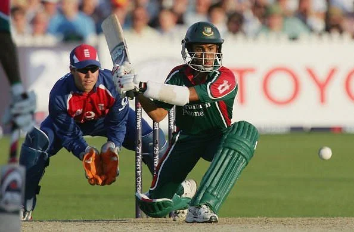
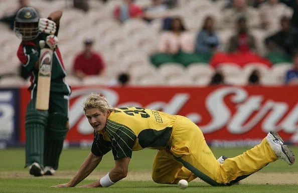
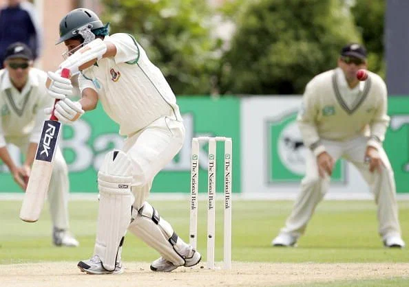
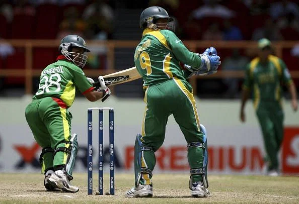
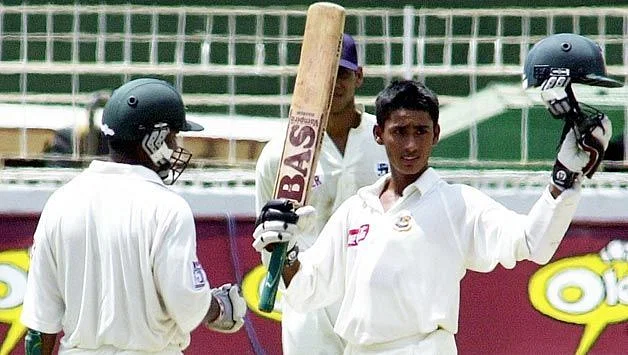
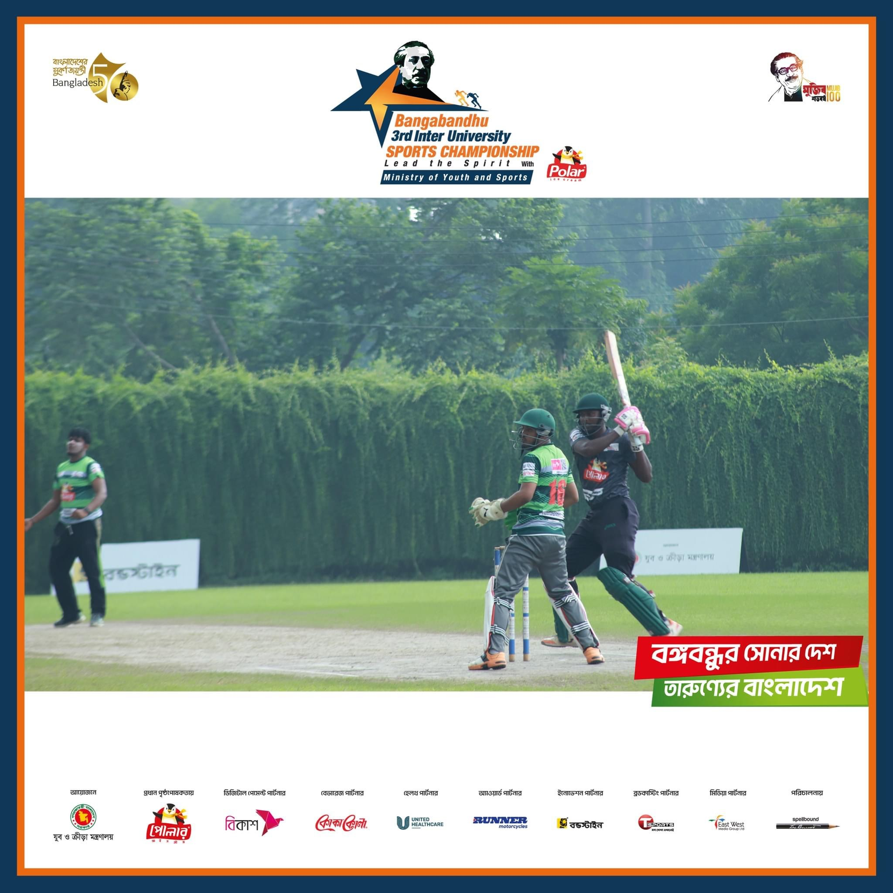

94 off 52 balls against England in Nottingham, 2005

100 (101) against Australia in Cardiff, 2005

158* against India in Chittagong, 2004

94 off 52 balls against England in Nottingham, 2005

Mohammad Ashraful's eventful career started in Sri Lanka back in 2001 when he smashed a century on Test debut at Colombo. Ashraful was only 17 years and 61 days when he achieved this amazing feat.
Ashraful smashed 114 runs off 212 balls when Bangladesh was just finding its feet in Test cricket.

94 off 52 balls against England in Nottingham, 2005